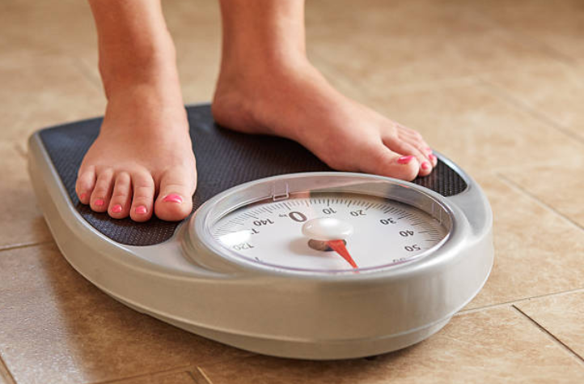

The 9 Hormones You NEED To Know About For Optimal Health
Weight gain. Cravings for sweet or salty foods. Blood sugar crashes. Slowed metabolism. Poor sleep quality. All of these undesirable symptoms can arise when our hormones become out of balance.
When our hormones are working in optimal harmony, we can naturally maintain a healthy metabolism, a functional appetite, and a healthy weight.
But when factors such as stress, genes, diet, health problems, and even injury throw them off balance, our hormones can wreak havoc on our wellbeing.
There are nine hormones that can literally make or break your ability to lose weight. How? By controlling your metabolism, hunger, and the ability to burn stored body fat.
If you are experiencing any of the problems listed above, this is a sure sign that one or more of these hormones might be out of balance:

1. Leptin, the “full” messenger
Leptin is the hormone responsible for telling you when you’re full. It also plays a role in metabolism and helps your body to decide when to burn fat.
Fat cells release leptin into the blood, which travels to your brain and signals that you’re full. This process works well until we introduce too much fructose, the sugar found in fruit and added to majority of processed foods.
Small amounts of fructose are fine and good for energy. But eating too much, even of fruit, can overload your liver.
The liver can’t process the fructose fast enough, so it gets sent into the bloodstream as triglycerides. In other words, fat. Over time, these fatty deposits build up in the liver and around our bellies, hips, and thighs.
And as more fructose is turned to fat, leptin levels increase because fat produces leptin. This leads the body to become desensitized to leptin and its message that “you’re full”, meaning we keep eating and gaining weight.
It’s a vicious cycle! Given that fructose is rampant in modern Western diets, this is a huge problem that many women face.
Leptin production can also be affected by sleep quality and timing of food consumption before sleep. According to an article published in The Journal of Clinical Endocrinology, “sleep modulates a major component of the neuroendocrine control of appetite.”
When leptin gets out of balance, it can trigger a chain reaction affecting other hormones in your body such as cortisol. To support healthy leptin production, aim to reduce fructose in your diet and resist eating just before bed.
2. Cortisol, the stress hormone
Cortisol is released in response to stress, in order to help your body to respond to perceived threats.
While it has its uses, cortisol becomes a problem in our bodies when it is over or under produced. This can occur as a result of chronic stress, a poor diet, or even from over-exercising.
Signs that your cortisol levels are abnormal can include:
- Weight gain
- Insomnia
- Hair loss
- Low libido
- Acne
- Abnormal digestion
- Slowed metabolism
High cortisol levels can suppress other normal bodily functions and lead to fat storage, muscle breakdown, and slowed metabolism.
The most effective way to reduce your cortisol levels, and its impact on your body, is to reduce stress. Low impact exercise and more sleep can also help.
And a note for coffee drinkers (sorry!)… Caffeine can raise cortisol levels, so if you’re struggling with stress or hormone-related issues, consider cutting back or choosing decaffeinated options.
3. Ghrelin, the hunger messenger
While leptin tells you when you’re full, the hormone ghrelin lets you know when you’re hungry. At normal levels, it serves an important function, but too much ghrelin can make you crave foods and overeat.
Lack of sleep, stress, and other hormone imbalances can all lead to ghrelin spikes. If you’ve ever felt hungry when you’re stressed or close to your period, that’s a ghrelin spike.
Reproductive hormones raise ghrelin levels, and inevitably make it more difficult to maintain a balanced appetite and a healthy weight. If you find yourself continuously feeling hungry or craving certain foods, it’s important to check how your sex hormones are functioning.
4. Adiponectin, the protein hormone that regulates glucose levels
Adiponectin helps the body to maintain normal glucose levels. It’s another important hormone involved in weight loss because it helps to regulate insulin levels and the breakdown of fat. Having optimal levels of this hormone reduces your chances of getting diabetes.
Adiponectin is anti-inflammatory in nature, so the body releases it in situations where you need to combat inflammation. This means that junk foods, highly acidic foods, or injuries can result in over exposure to adiponectin.
When this happens, your body is prevented from burning fat efficiently as it tries to combat the effects of increased adiponectin and restore balance.
5. Insulin, the fat trapper and blood sugar regulator
Most people know this hormone through its reputation as being closely linked to diabetes. Its role in processing food, particularly sugar, makes it one of the most vital hormones in maintaining a healthy weight.
A high sugar diet, inactive lifestyle, sleep problems, and certain Hormonal disorders can cause insulin levels to rise to unsustainable levels, resulting in the body becoming insulin-resistant.
This is what leads to diabetes, as well as an impaired ability to burn away stored body fat as the fat becomes ‘trapped’ by insulin.
Symptoms of insulin resistance can include:
- Obesity, particularly excess fat in the abdominal area
- Acne
- High blood pressure
- Craving sugar and carbs
- Polycystic ovary syndrome (PCOS) in women
You can combat high insulin by reducing the amount of sugar, processed foods, and “beige” carbs in your diet. Try swapping them out for veggies and fruits, nuts and seeds, and increasing your intake of lean meats and other natural proteins.
6. Glucagon, the fat releaser hormone
Glucagon is the opposite of insulin. While insulin traps fat in your tissues, glucagon releases it. Sounds great, right? However, the two hormones are closely interlinked, meaning that if one is off balance, the other has a harder time doing its job.
To have optimal glucagon levels, it’s essential that a healthy hormone balance is maintained, as well as a balanced diet and good quality of sleep.
7. Growth Hormone
This hormone keeps you young! It contributes toward muscle growth, gives you energy, and aids metabolism.
There’s a catch.
It’s only produced in what’s known as “stage 4 sleep,” or deep sleep.
That means that any factor that influences sleep also affects the production of growth hormone. When low levels of this hormone are sustained over time, this can effectively accelerate aging both inside and outside the body.
The usual suspects that can negatively impact hormones apply, such as diet, exercise, stress, and caffeine. However, sometimes there is a deeper underlying hormonal issue which needs to be addressed.
8. Testosterone, for healthy muscle and metabolism
We could discuss what testosterone does for men, but that’s a commonly covered topic. It’s not as common to talk about what testosterone does for women. Don’t be fooled—women need testosterone just as much as men do.
For both sexes, testosterone contributes towards healthy muscle growth and metabolism. If you’re suffering from low testosterone, you may be experiencing some of the following:
- Tiredness, sometimes chronic, even after a good night’s rest
- Trouble losing weight
- Low sex drive
- Mood swings, depression
- Anxiety, lack of concentration
- Thinning hair
As women, we don’t want too much testosterone, but a healthy amount helps us to manage our weight and support optimal hormone functioning.
To help keep your testosterone levels in balance, try to exercise daily, even if it’s just a half hour walk. Maintaining a healthy sex life is also a good (and fun) way of raising testosterone levels.
Zinc-rich foods like whole grains, seafood, and nuts are also great for your testosterone levels, as well as getting a good night’s rest.
The bottom line is, it’s essential to have balanced levels of testosterone and estrogen, even though that’s not something that is normally addressed for women.
9. Estrogen, for healthy weight and insulin production
Did you know that high estrogen levels can actually cause weight gain around your hips and thighs?
Estrogen is the primary female sex hormone and is essential for reproduction. However, it also helps to regulate body weight and is closely linked to insulin production. This means that an imbalance of estrogen can cause rapid weight gain.
An estrogen imbalance can interrupt the natural breakdown of energy by causing the body to store more glucose as fat, rather than sending it to the muscles to be burned as energy.
Here are some symptoms of having higher than normal estrogen:
- An irregular menstrual cycle
- Weight gain
- Mood swings
- Low libido
- Bloating, sore breasts
- Headaches
Estrogen can be thrown off by a number of things, but when it comes to our diet, synthetic hormones in meat, processed foods, and pesticides can be a big factor.
These are basically toxins that your body treats like estrogen, and pose dangers when consumed in high enough quantities, as they can result in the development of estrogen-associated diseases like breast and ovarian cancers.
This isn’t to say you shouldn’t eat meat. It’s more about how the meat was raised. Look for organic, free-range meat products without hormones or antibiotics.
Also try introducing more fiber into your diet, which can help to flush these toxins from your system more efficiently. Fresh fruits like apples and melons are great as they contain a compound called “flavone” that helps suppress estrogen.
Are your hormones out of balance?
A healthy diet and exercise can help, but sometimes more is required to regain optimal hormone balance and look & feel your best.
When thinking about managing and balancing hormones, many of the same things can help: good sleep, plenty of water, a healthy diet with good fats, and avoiding chemicals in your food.
However, sometimes despite our best efforts, we still feel like something’s “not right”.
It might be that no matter what you try, you just can’t lose any weight. Maybe you’re constantly feeling exhausted, low, scatterbrained, or unable to sleep. Maybe you have noticed that your skin and hair is appearing dull, blotchy, and aged.
If this is the case, you are not alone. You may have underlying hormone imbalance problems that are preventing you from being your most healthy, vibrant self.
To find out how to overcome these problems and achieve optimal balance, continue to ==>Click here: PowerOfHormones.com to find out more.
References:
“Hormones and Weight Gain.” Christina Carlyle.
“How to Turn Off Your Weight Gain with Hormones” Sara Gottfied, MD